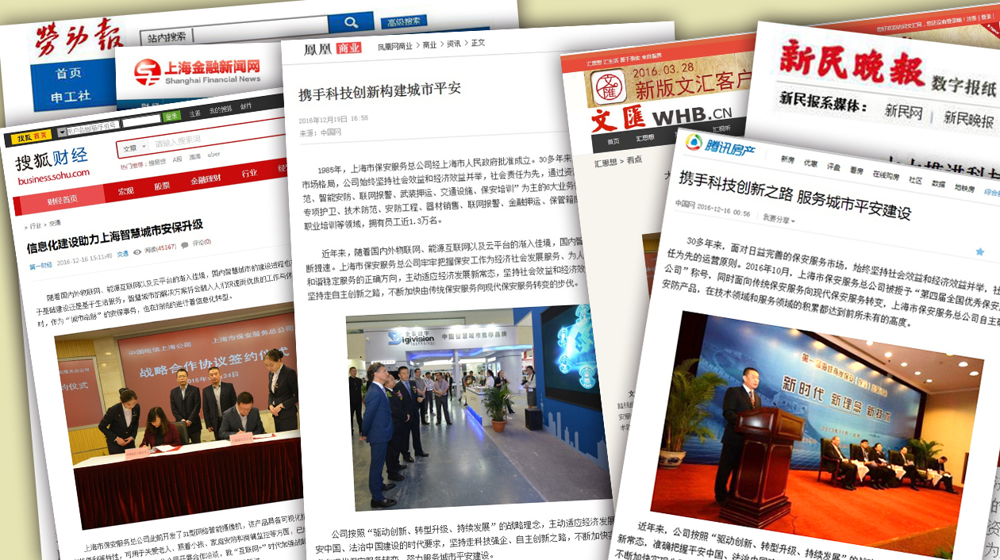

本报讯 2016年10月，上海市保安服务总公司被公安部、全国总工会、共青团中央授予“第四届全国优秀保安服务公司”称号，表彰大会召开前，中共中央政治局委员、中央政法委书记孟建柱在与受表彰代表座谈时专门指出，上海市保安服务总公司自主研发安防产品，取得38项国家级软件著作权、专利，推动了传统保安服务向现代保安服务转变。
日前，文汇网、搜狐网、腾讯网、上海金融新闻网、凤凰网、劳动报、新民晚报等多家新闻媒体，相继对总公司荣获“第四届全国优秀保安服务公司”称号，以及近年来总公司在大力推进科技强企，助力上海智慧城市建设中发挥的重要作用进行了全方位、多角度的宣传报道，有效提升了上海保安品牌知名度和企业影响力，为总公司向更广阔的保安服务领域拓展延伸，更好地参与“智慧城市”、“平安城市”建设起到了积极作用。（本报编辑部）

多家主流新闻媒体对总公司进行宣传报道